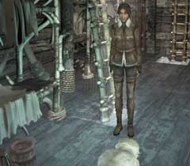

| 概要 | 地図 |
| 淡いヒント集 | ヒント集 | 的確なヒント集 |
| 攻略最短ルート |
| 場所選択に戻る |
シベリア

船を下りたら、まず右へ移動しハシゴを上ろう。その先に見張り小屋がある。 見張り小屋には、一人の人間が立っている。実際には、もうこの人物は死んでおり、この人が何者なのかは全く変わらない。しかし、この人物は非常に重要なアイテムを持っている。 「ユコール族のメダル」を忘れずに回収しておこう。 
この扉を動かすには、ユーキーに車輪を回してもらうしかない。 ユーキーを起こす前に、扉のそばにあるレバーを引いて車輪をおろしておこう。 
本を読んでもらえば分かるが、シベリアに生息する「ブルーグラス」という植物が必要である。この植物がどこにあるかは、ゲーム画面をよく見れば分かるはずだ。上の画像のような植物が見えるであろうから。 「ブルーグラス」以外にも忘れてはいけないものがある。ブルーグラスの根本に「石版」が一枚落ちているのだ。これも忘れずに拾っておこう。

「ブルーグラス」を手に入れたら、ユーキーに近づけてみよう。強烈なにおいでユーキーは元気よく飛び起きるはずだ。
| 次へ >> |
|
| 場所選択に戻る |
| 概要 | 地図 |
| 淡いヒント集 | ヒント集 | 的確なヒント集 |
| 攻略最短ルート |
Syberia II
| 目次へ戻る | ページの上部へ |